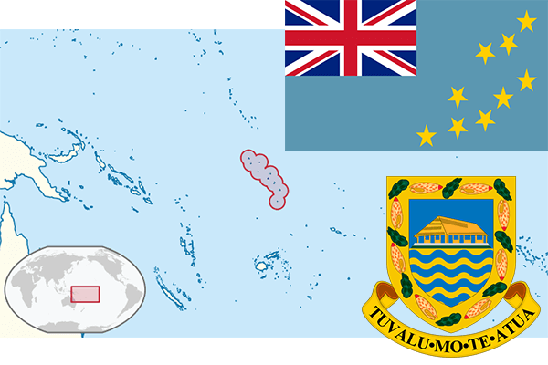

To`liq nomi: Tuvalu
Region: Tinch okeani
Qonunchilik shakli: Monarxiya
Mustaqillik kuni: 1 oktabr 1978-yil
Poytaxt: Funafuti
Maydoni: 26 км²
Chegaradosh davlatlari: Yo’q
Aholisi: 11 206 (2016-yil)
Aholi zichligi: 431,00 /км²
Aholining o`rtacha yoshi: -
Rasmiy tili: Tuvalu va Ingliz tillari
Dini: Xristian
Pul birligi: Tuvalu dollari
Telefon prefiksi: +688
Internet domen: .tv
Xalqaro tashkilotlarga a`zoligi: BMT
Dengiz va okeanlarga chiqishi: Tinch okeani
YIM: Butun: $31,3 mln.(2013-yil)
Yirik shaharlari: Funafuti